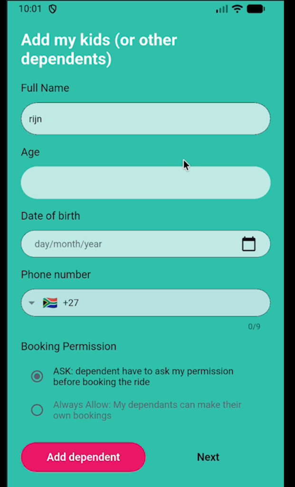

Shubble Android Audit
Prepared for Daniella Louw
Executive Summary
I've performed a "Basics-Check" on the Android version of the Shubble app. While the core logic is functional, I've identified several key areas where the user experience creates friction. Additionally, the iOS build is currently paused due to an Apple ID sign-in requirement.
My Observation: The current interface feels significantly dated—several generations behind modern consumer apps like Uber or Bolt. To command a premium price and trust, the app needs a visual overhaul to match the quality of the service itself.
1. Android Basics-Check Findings
🚨 Priority Findings
- Confusing Terminology: The app asks users to "Register as Client". This is internal dev-speak. It should clearly say "Sign Up as Rider" or "Passenger" to avoid confusion.
- T&Cs Checkbox: The text isn't clickable, which is a small but annoying usability issue.
- Poor Copy Quality: There are widespread issues with capitalization, spelling, and grammar throughout the app (e.g., "discount type" in lowercase, "Button" as a label). Recommendation: A full copy audit is needed to ensure a professional voice.

🛑 Booking Flow Analysis

Confusing CTA Logic
Problem: The user is forced to click "Get a Quote" before they can click "Accept". If they click "Accept" first, they get an error telling them to get a quote. This is redundant friction.
Recommendation: Automate this. The quote should calculate instantly in real-time as the user enters details. There should be one single "Book Now" button.

Features to Retain: Despite the layout issues, the underlying logic for Pickup Time, Special Instructions, and Extras is actually quite solid. Recommendation: Retain this logic but break it down into a multi-step "Wizard" to make it feel less overwhelming.
2. UI/UX Overhaul Needed
I've pinpointed specific areas where we can elevate the design from "Utility" to "Premium Experience".
App Icon
Problem: The current icon is low-res and gets lost on a busy home screen.
Recommendation: Design a crisp, vector-based icon using the new "Safety Teal" palette. It needs to look trustworthy and instantly recognizable.
Redundant Navigation
Problem: The interface is cluttered with duplicate actions. For example, there are 4 different ways to access the Profile screen from the Home page (Sidebar, Top Right Icon, Middle Card, Bottom Nav). This confuses users about where they are supposed to go.
Recommendation: Simplify. One clear home for every action. The Profile belongs in the Settings tab, not scattered across the UI.
Phone Number Input
Problem: It's just a raw text field right now. It's easy to type a wrong number.
Recommendation: Implement a proper formatter with a country flag selector. It looks better and prevents bad data from getting into the system.

Navigation & Back Buttons
Problem: Navigation controls are inconsistent. Buttons jump around, and critically, there is often no Back button on deep screens, trapping the user.
Recommendation: Introduce a standard top navigation bar with a dedicated "Back" chevron on every child screen. Combine this with a sticky footer for the "Next" action to anchor the experience.

Date Picker
Problem: The calendar widget is clunky for selecting a birth year (too many taps).
Recommendation: Swap this for a native scroll-wheel (Spinner). It's faster, cleaner, and what iOS/Android users expect.

Redundant "Age" Input
Problem: There is a grayed-out "Age" field sitting above the Date of Birth picker. It's uneditable and only fills in after you select a date below it. This confuses users who try to tap it first.
Recommendation: Delete this field. We don't need to show the user their own age math. Just take the Date of Birth and calculate it in the background.
Location Selection
Problem: Dragging a pin is frustrating when you know exactly where you want to go.
Recommendation: Integrate Google Places Autocomplete. Users can just type "Cape Town Airport" and get the exact spot instantly.

Broken Styling & Inconsistency
Problem: Several screens (e.g., "Add Dependents", "Payment Methods") completely lose the app's branding. We see unstyled inputs, generic "Button" labels, and random layout shifts.
Recommendation: Enforce the global theme on every view. A sub-flow shouldn't feel like a different app.
Design System Strategy
Problem: There is fundamentally no Design System in place. It’s not just about corner radii—the entire visual language is fragmented. Every screen feels slightly different, which makes the app feel disjointed and "cheap" rather than premium.
Recommendation: Build a strict, "Plug-and-Play" Design System (tokens for color, type, spacing) independently. This allows for a locked-down style package that the external team just needs to implement, removing any need for them to make design choices.
3. iOS Status: BLOCKED
daniellalouw81@gmail.com) is
currently blocking the final payment. Recommendation: Coordinate a sign-in session tomorrow (when
time zones align) to resolve this. Goal: Begin iOS testing this weekend.
iPhone testing cannot proceed until this payment hurdle is cleared.
4. Legacy App Walkthrough
A screen recording of the current "Rider" experience, highlighting the friction points discussed above.
5. Vision vs. Reality
A side-by-side look at where we are vs. the proposed future state.
Booking Flow
LEGACY (CURRENT)

Cluttered, long scroll, hidden CTA.
VISION (FUTURE)


Step-by-step wizard reduces cognitive load and ensures data accuracy.
Sidebar Navigation
LEGACY (CURRENT)

Empty, wasted space, broken assets.
VISION (FUTURE)

Rich profile, gamification stats, easy access.
6. Vision Prototype Demo
A walkthrough of the new high-fidelity prototype interaction.
7. Strategic Recommendation
December On-Site Sprint (Somerset West)
Recommendation: Leverage the upcoming December visit for a dedicated 2-week on-site sprint. Goal: Sit down with the operations team, review the current app side-by-side, and lock in the product direction together.